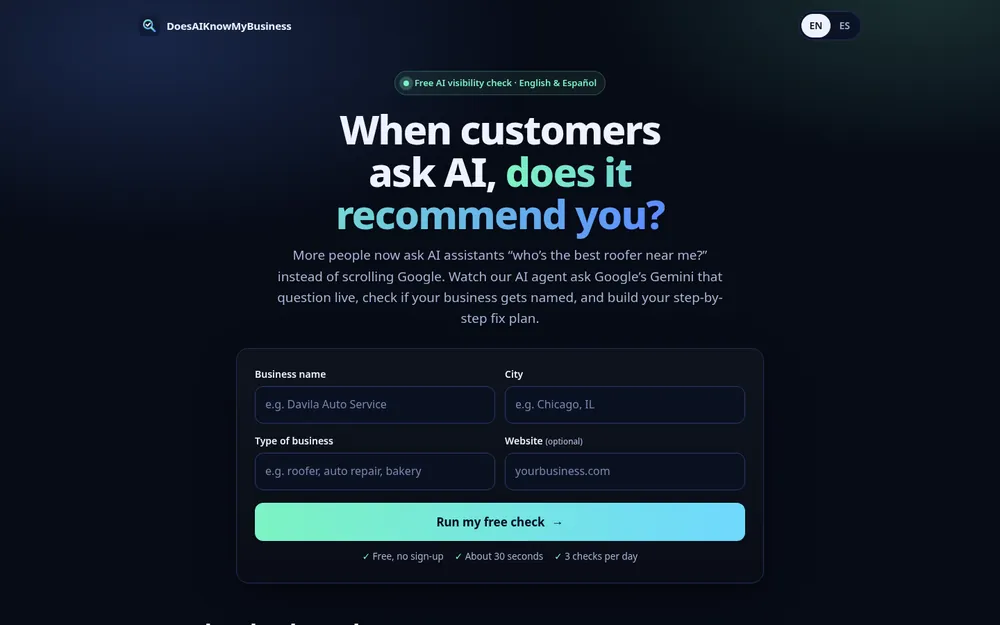

AI Tool
Does AI Know My Business? (AI Visibility Check)
A free tool that shows whether AI recommends a local business. An AI agent runs live Google searches on screen, then gives a 0–100 score, the competitors AI names instead, a check of the business's website, and a fix plan with ready-to-paste schema code. It works in English and Spanish. I built it with Grok Bot, using Gemini + Google Search grounding, Vercel, and JavaScript.
Try it →